groundhog<-read.csv("data/archive.csv")
#Get rid of rows with no record or partial shadow. Let's be serious!
groundhog <- subset(groundhog, groundhog$Punxsutawney.Phil %in% c("Full Shadow","No Shadow") & !is.na(groundhog$February.Average.Temperature))14 Monte Carlo Testing
14.1 Example: Groundhog’s Day
How well has Punxsutawney Phil done in predicting the weather?
Thousands gather at Gobbler’s Knob in Punxsutawney, Pennsylvania, on the second day of February to await the spring forecast from a groundhog known as Punxsutawney Phil. According to legend, if Phil sees his shadow the United States is in store for six more weeks of winter weather. But, if Phil doesn’t see his shadow, the country should expect warmer temperatures and the arrival of an early spring.
Source: https://www.kaggle.com/datasets/groundhogclub/groundhog-day?resource=download
Let’s do a permutation test
\(H_0:\) Phil’s not a true forecasting groundhog \(H_1:\) Phil has some forecasting power.
14.1.1 Early Spring = February warmer than average
We will compare mean temperature in February as a measure of early spring. We will take those years of “early spring” prediction and those of “regular spring” and compare the average average Feb temperature in those two groups.
#Isolate feb avg temperature for full shadow years
#isolate feb avg temperature for no shadow years
feb.avg.shadow <- groundhog$February.Average.Temperature[groundhog$Punxsutawney.Phil=="Full Shadow"]
feb.avg.noshadow <- groundhog$February.Average.Temperature[groundhog$Punxsutawney.Phil=="No Shadow"]
#check
feb.avg.shadow [1] 35.37 30.76 29.86 28.42 31.59 26.94 33.69 35.46 33.01 35.02 29.30 33.66
[13] 31.08 29.50 29.52 35.94 33.03 30.09 33.82 32.25 33.69 36.90 31.95 29.57
[25] 35.19 38.30 37.67 37.90 34.34 26.92 40.10 37.94 36.70 29.59 36.01 25.23
[37] 31.73 36.00 29.98 33.85 33.53 34.50 35.28 34.88 31.41 31.62 31.91 34.54
[49] 35.46 35.87 41.41 31.05 32.27 38.07 31.98 32.49 30.52 37.42 34.92 34.12
[61] 31.77 32.52 31.24 32.88 32.92 32.81 33.48 33.55 33.58 34.74 39.56 36.03
[73] 27.99 28.13 32.85 36.59 32.59 37.38 30.87 37.38 29.17 39.81 39.70 31.14
[85] 31.87 35.69 38.71 39.78 33.98 36.39 32.79 33.57 37.94 34.83 34.70 36.77
[97] 31.80 37.51 32.13 32.99feb.avg.noshadow [1] 34.32 35.55 35.35 32.76 36.86 35.85 33.69 36.70 37.36 36.05 39.49 32.41
[13] 33.04 34.77 39.47#We will use mean feb no shadow - mean feb shadow; if this >0 that is evidence that the predictions work.
mean(feb.avg.noshadow)-mean(feb.avg.shadow)[1] 1.8655permute_and_compute <- function(sampleA, sampleB){
#remember - sampleA is no shadow
#sample B is shadow
pooledData <- c(sampleA, sampleB)
shuffledData <- sample(pooledData)
sim.sampleA <- shuffledData[1:length(sampleA)]
sim.sampleB <- shuffledData[(length(sampleA)+1):length(shuffledData)]
#we may modify this if we want to use a different test statistic
return(mean(sim.sampleA)-mean(sim.sampleB))
}
t_obs <- mean(feb.avg.noshadow)-mean(feb.avg.shadow)
test.stats <- 0 #lazy empty vector - R will add more to it without complaining
NMC <- 10000
for(i in 1:NMC){
test.stats[i] <- permute_and_compute(feb.avg.noshadow, feb.avg.shadow)
}
hist(test.stats)
abline(v=t_obs, col="red")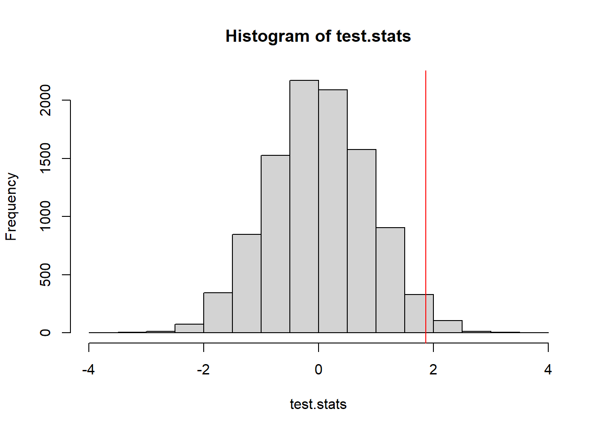
mean(test.stats >= t_obs) #p-value[1] 0.016914.1.2 Early Spring = warmer than average March temperatures
Maybe he’s better at predicting March temperatures?
mar.avg.shadow <- groundhog$March.Average.Temperature[groundhog$Punxsutawney.Phil=="Full Shadow"]
mar.avg.noshadow <- groundhog$March.Average.Temperature[groundhog$Punxsutawney.Phil=="No Shadow"]
t_obs <- mean(mar.avg.noshadow)-mean(mar.avg.shadow)
test.stats <- 0 #lazy empty vector - R will add more to it without complaining
NMC <- 10000
for(i in 1:NMC){
test.stats[i] <- permute_and_compute(mar.avg.noshadow, mar.avg.shadow)
}
hist(test.stats, breaks=50)
abline(v=t_obs, col="red")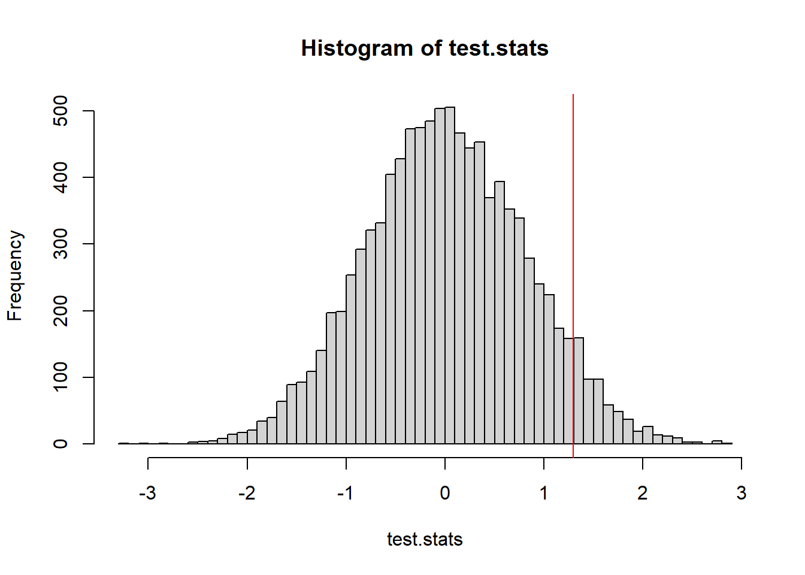
mean(test.stats >= t_obs)[1] 0.060114.1.3 Early Spring = Mean of Feb & March temps above average
What if we average Feb and March temperatures together.
groundhog$FebMarAvg <- (groundhog$February.Average.Temperature+groundhog$March.Average.Temperature)/2
avg.shadow <- groundhog$FebMarAvg[groundhog$Punxsutawney.Phil=="Full Shadow"]
avg.noshadow <- groundhog$FebMarAvg[groundhog$Punxsutawney.Phil=="No Shadow"]
t_obs <- mean(avg.noshadow)-mean(avg.shadow)
test.stats <- 0 #lazy empty vector - R will add more to it without complaining
NMC <- 10000
for(i in 1:NMC){
test.stats[i] <- permute_and_compute(avg.noshadow, avg.shadow)
}
hist(test.stats, breaks=50)
abline(v=t_obs, col="red")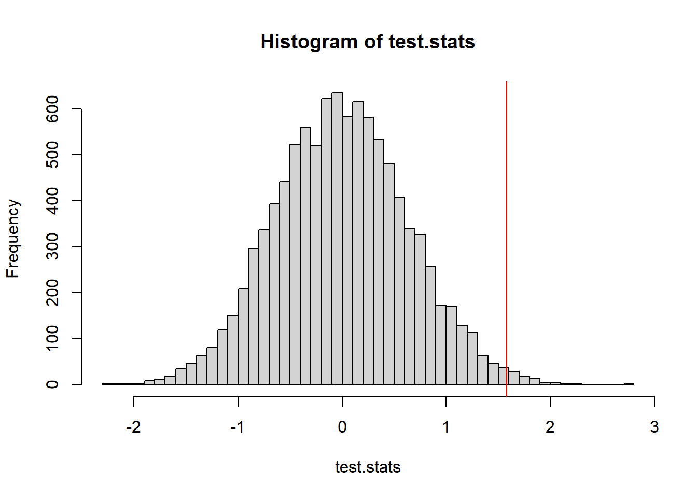
mean(test.stats >= t_obs)[1] 0.0078I don’t know about you, but this is staring to seem a little bit weird.
14.1.4 Measuring Accuracy
(New idea of what “early spring” means)
If both February temperatures and march temperature are greater than average, then we say we have an early spring.
feb.avg <- mean(groundhog$February.Average.Temperature)
mar.avg <- mean(groundhog$March.Average.Temperature)
groundhog$EarlySpring <- groundhog$February.Average.Temperature>feb.avg & groundhog$March.Average.Temperature>mar.avg
addmargins(table(groundhog$Punxsutawney.Phil, groundhog$EarlySpring))
FALSE TRUE Sum
Full Shadow 75 25 100
No Shadow 7 8 15
Sum 82 33 115when earlySpring = TRUE, and prediction was “no shadow” that would be correct when earlySpring = FALSE and prediction is “full shadow” that would be correct
accuracy <- function(guesses, weather){
predictEarlySpring <- guesses=="No Shadow"
nCorrect <- sum(weather==predictEarlySpring)
return(nCorrect/length(weather))
}
accuracy(groundhog$Punxsutawney.Phil, groundhog$EarlySpring)[1] 0.7217391Let’s call our simulated Groundhog “Bernoulli Phil”
prop.table(table(groundhog$Punxsutawney.Phil))
Full Shadow No Shadow
0.8695652 0.1304348 #A randomly guessing groundhog would see his shadow this proportion of the time
p.shadow <- prop.table(table(groundhog$Punxsutawney.Phil))[1](accuracy.obs <- accuracy(groundhog$Punxsutawney.Phil, groundhog$EarlySpring))[1] 0.7217391#simulate guesses by Bernoulli Phil
randomGuesses <- function(n=115, p=0.8695652){
return(sample(c("Full Shadow","No Shadow"), size=n, replace=TRUE, prob=c(p,1-p)))
}
NMC <- 10000
results <- rep(0,NMC)
n <- nrow(groundhog)
for(i in 1:NMC){
results[i] <- accuracy(randomGuesses(n, p.shadow), groundhog$EarlySpring)
}
hist(results, breaks=40)
abline(v=accuracy.obs)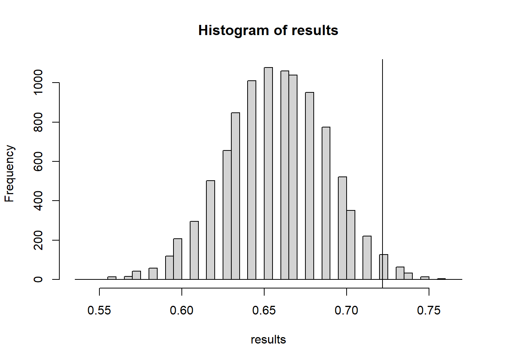
mean(results >= accuracy.obs)[1] 0.0271The actual groundhog’s accuracy is statistically much better than the simulated “random guessing” groundhog - at least better at predicting if both Feb & March will be above average temperature.
The scatterplot colored by shadow status makes this pattern suspiciously clear
plot(groundhog$February.Average.Temperature, groundhog$March.Average.Temperature, col=(as.numeric(groundhog$Punxsutawney.Phil=="Full Shadow") +1), xlab="Avg. Feb Temp", ylab="Avg. Mar Temp", main="National Feb/Mar Temp vs Shadow", pch=16)
abline(v=mean(groundhog$February.Average.Temperature))
abline(h=mean(groundhog$March.Average.Temperature))
legend(x=25, y=50, legend=c("early spring","6 wks winter"), pch=16, col=1:2)
O ye unbelievers! Witness the prognosticating powers of Phil the groundhog!
14.1.5 Looking at Deviation from a moving average
However we have to be cautious - think about climate change and Phil’s predictions.
library(smooth)Loading required package: greyboxPackage "greybox", v2.0.6 loaded.
Attaching package: 'greybox'The following object is masked _by_ '.GlobalEnv':
accuracyThis is package "smooth", v4.3.1
Attaching package: 'smooth'The following object is masked _by_ '.GlobalEnv':
accuracyMA <-sma(groundhog$FebMarAvg, order=20)
#predict(MA)
plot(y=groundhog$FebMarAvg, x=groundhog$Year, col=as.numeric((as.factor(groundhog$Punxsutawney.Phil)))+1, pch=16)
lines(y=predict(MA)$mean, x=groundhog$Year)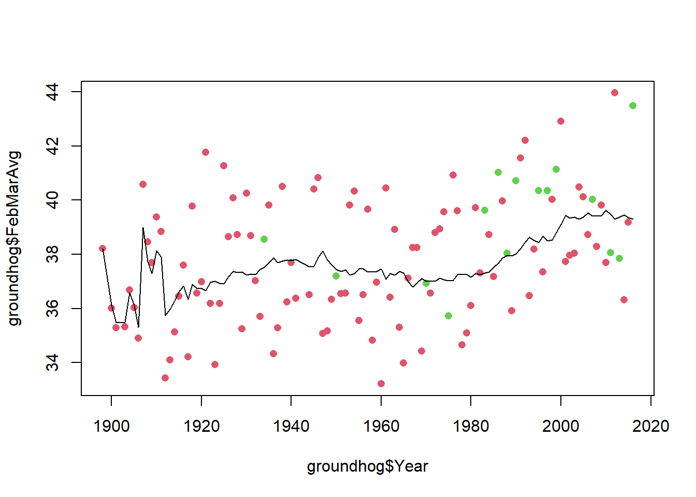
Notice that he has been predicting early springs more often since the 60s, and also we’ve been having warmer and warmer temperatures. Perhaps he’s predicting early spring more often because of climate change, and thus he is correct more often.
This whole analysis really hinges on what we mean by an “early spring”. One could argue that with rising global temperatures, spring is actually coming earlier more often than it used to, and THAT’s why he’s seeing no shadow more often.
If we repeat this analysis and look not at whether the temperature is above average, but rather whether the temperature is above the moving average then it changes the conclusion a bit
groundhog$tempDev <- groundhog$FebMarAvg - as.numeric(predict(MA)$mean)
plot(y=groundhog$tempDev,x=groundhog$Year, col=as.numeric((as.factor(groundhog$Punxsutawney.Phil)))+1, pch=16, ylab="dev from moving avg")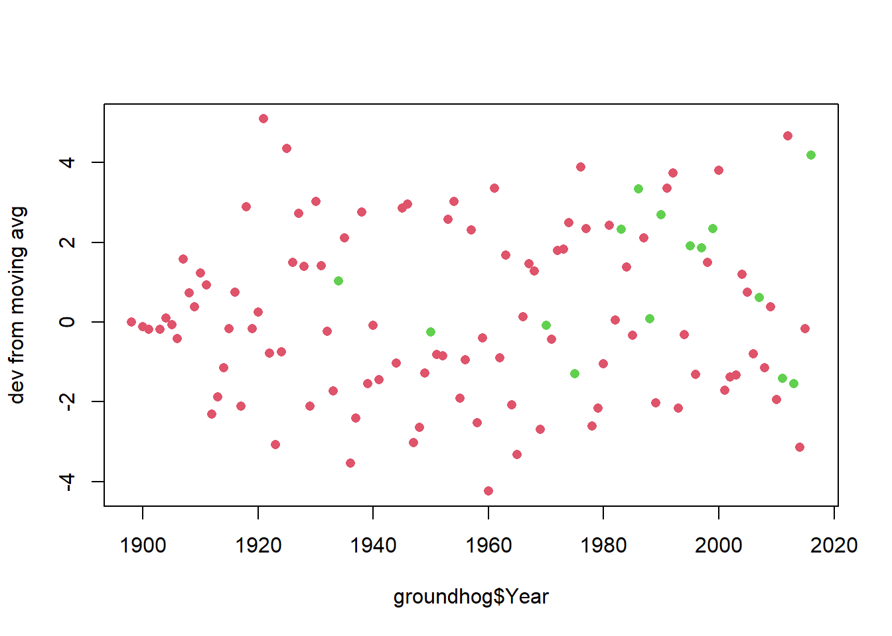
avg.shadow <- groundhog$tempDev[groundhog$Punxsutawney.Phil=="Full Shadow"]
avg.noshadow <- groundhog$tempDev[groundhog$Punxsutawney.Phil=="No Shadow"]
t_obs <- mean(avg.noshadow)-mean(avg.shadow)
test.stats <- 0 #lazy empty vector - R will add more to it without complaining
NMC <- 10000
for(i in 1:NMC){
test.stats[i] <- permute_and_compute(avg.noshadow, avg.shadow)
}
hist(test.stats, breaks=50)
abline(v=t_obs, col="red")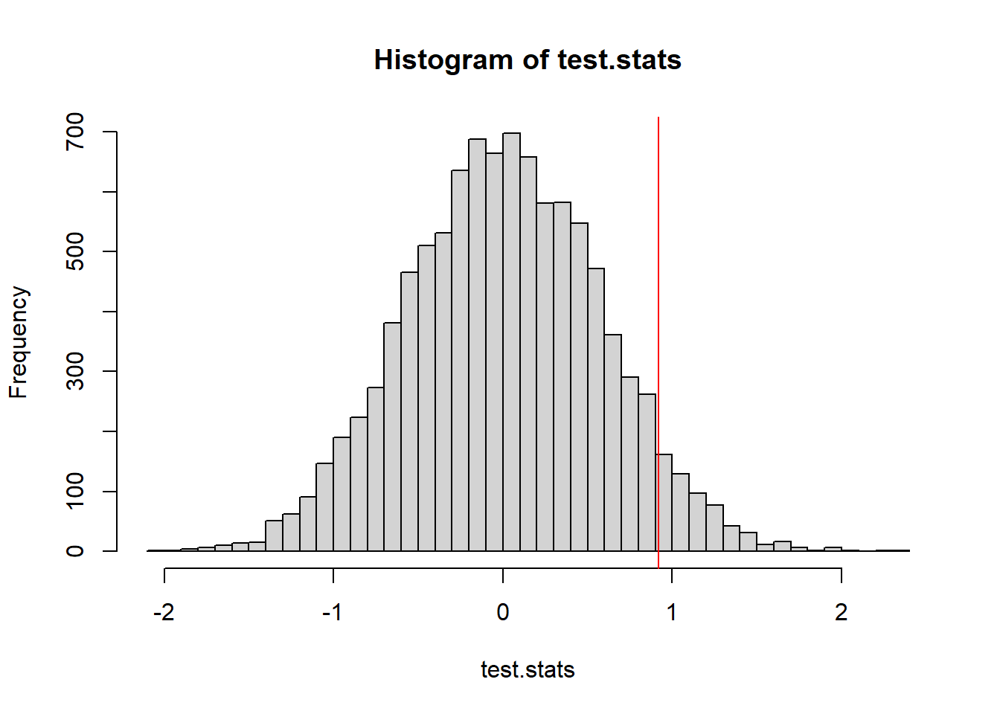
mean(test.stats >= t_obs)[1] 0.0559Last let’s consider an “early spring” when both Feb and March average temps are above the moving average.
MAfeb <-sma(groundhog$February.Average.Temperature, order=20)
MAmar <-sma(groundhog$March.Average.Temperature, order=20)
earlySpring <- groundhog$February.Average.Temperature > as.numeric(predict(MAfeb)$mean) &
groundhog$March.Average.Temperature > as.numeric(predict(MAmar)$mean)
accuracy(groundhog$Punxsutawney.Phil, earlySpring)[1] 0.7130435The accuracy is now not much better than a flip of a coin. But that’s not statistical thinking - we need to see if he is better than a randomly guessing groundhog.
(accuracy.obs <- accuracy(groundhog$Punxsutawney.Phil, earlySpring))[1] 0.7130435#simulate guesses by Bernoulli Phil
randomGuesses <- function(n=115, p=0.8695652){
return(sample(c("Full Shadow","No Shadow"), size=n, replace=TRUE, prob=c(p,1-p)))
}
NMC <- 10000
n <- nrow(groundhog)
results <- replicate(NMC, accuracy(randomGuesses(n, p.shadow), earlySpring))
hist(results, breaks=40)
abline(v=accuracy.obs)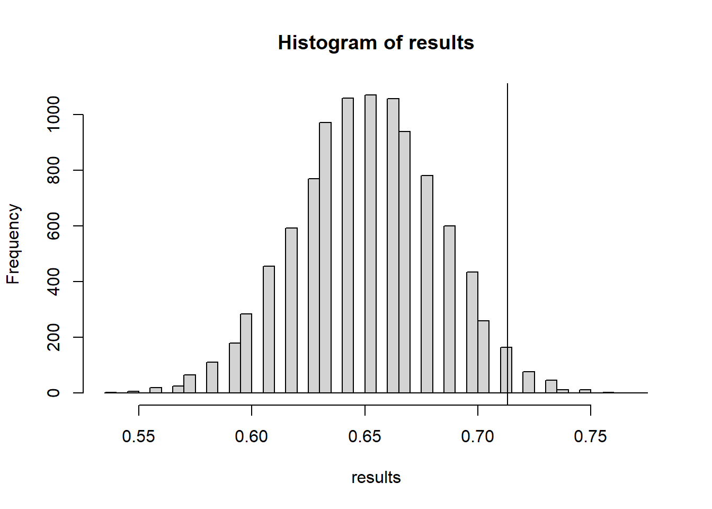
mean(results >= accuracy.obs)[1] 0.0314I’m still convinced - the groundhog does significantly better than a random guesser.
14.2 Example: Autocorrelation
A question of particular importance in time series analysis is whether there is any autocorrelation. If your data is recorded regularly at timesteps \(1,2,\ldots\) we could look at the relationship between \(X_i\) and \(X_{i+1}\) to see if they exhibit correlation.
consider the following time series data:
time_series <- read.csv("data/time_series_data.csv")
plot(time_series$x, type="l")
One possible model for how this data came about is that it is independent draws from a random variable. A quick check of the histogram can help us determine a good random variable to model the data:
hist(time_series$x, breaks=20)
The distribution is somewhat symmetric, bell-shape. It could be a normal distribution. A better check for the distribution fit is a qqnorm plot.
library(car)
qqPlot(time_series$x)
[1] 98 83Let’s just pull the point estimates for the \(\mu\) and \(\sigma\) parameters for a normal distribution.
(mu <- mean(time_series$x))[1] 100.1767(sigma <- sd(time_series$x))[1] 4.166514If we are reasonably comfortable with the assumption that the data came from a normal distribution (seems supported by the QQ plot) we could model \(X\) as independent draws from \(N(100.17, 4.17^2)\).
A natural test statistic to look at which measures autocorrelation is the correlation of \(X_i\) with \(X_{i+1}\).
test.stat <- function(X){
return(cor(X[-1], X[-length(X)] ) )
}
(obs.t <- test.stat(time_series$x))[1] 0.299179114.2.1 A Parametric Test of Autocorrelation
To perform a Monte Carlo test we can simulate datasets from our null hypothesis model and record the simulated test statistic.
t.sim <- replicate(10000, test.stat(rnorm(100, mu, sigma)))
hist(t.sim)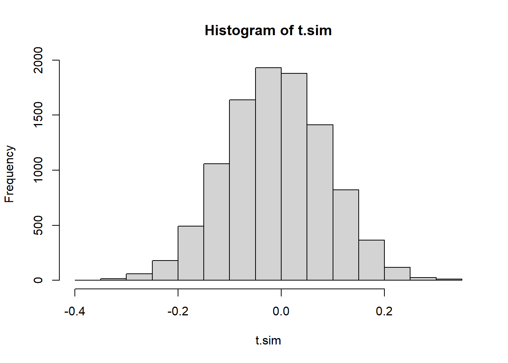
We will consider what proportion of the simulated test statistics are more extreme than we observed. Because this is a two-tailed distribution - and evidence against the null would be found in either the upper or the lower tail, we should make our p-value calculation by doubling the smaller of the two tails
2 * min(mean(t.sim >= obs.t),
mean(t.sim <= obs.t))[1] 0.002hist(t.sim)
abline(v=obs.t, col="red")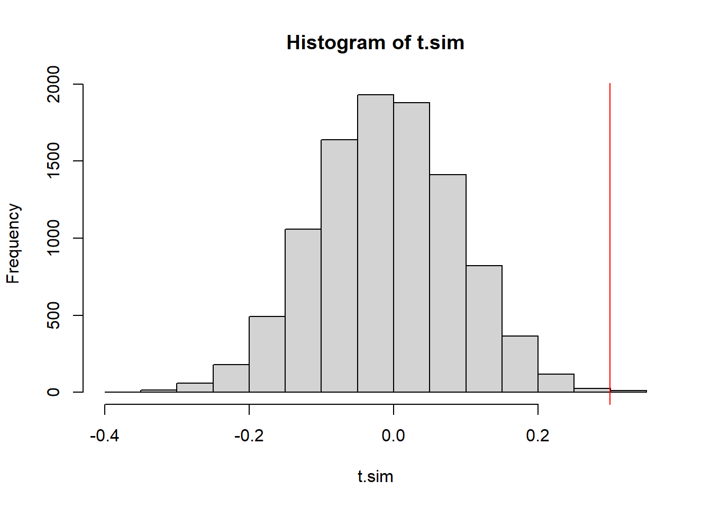
We have a very low p-value, indicating that if the data were in fact independent draws, we’d have a very very small chance of seeing data like this.
14.2.2 A Permutation Test of Autocorrelation
We could also take a different approach for our null model. We could use a permutation test. Under the null hypothesis, every permutation of the data is equally likely. So we could produce a simulated test statistic distribution by shuffling the data around each time. This is consistent with our null hypothesis because there’s no trend in this model.
t.sim <- replicate(10000,
test.stat(sample(time_series$x)))
2 * min(mean(t.sim >= obs.t),
mean(t.sim <= obs.t))[1] 8e-04hist(t.sim)
abline(v=obs.t, col="red")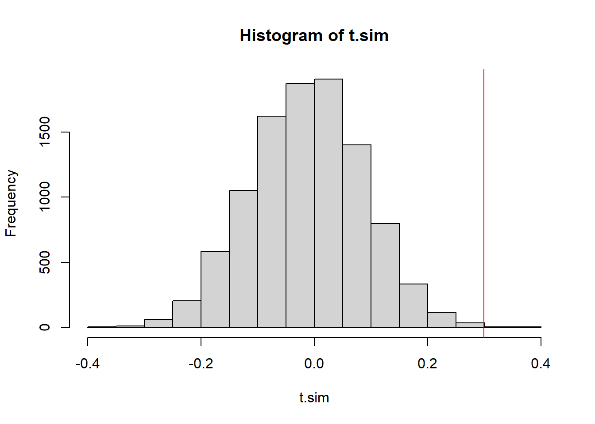
The p-value is pretty much the same, and so is our conclusion.
14.2.3 A Permutation test of constant variance
Another violation of the null model would be if the variance of the simulated values is not consistent. We could simply split the data in half and calculate the variance of the first half of the data, comparing it with the variance of the second half of the data. We can look at the absolute value of the difference.
test.stat <- function(x){
n1 <- round(length(x)/2)
abs(var(x[1:n1]) - var(x[-(1:n1)]))
}
(obs.t <- test.stat(time_series$x))[1] 13.25346This test statistic is designed to be a one-sided test statistic, only large values of \(T\) represent evidence against the null hypothesis that \(\sigma^2\) is constant.
t.sim <- replicate(10000, test.stat(sample(time_series$x)))
mean(t.sim >= obs.t) #right-tailed p-value[1] 0.0052hist(t.sim)
abline(v=obs.t, col="red")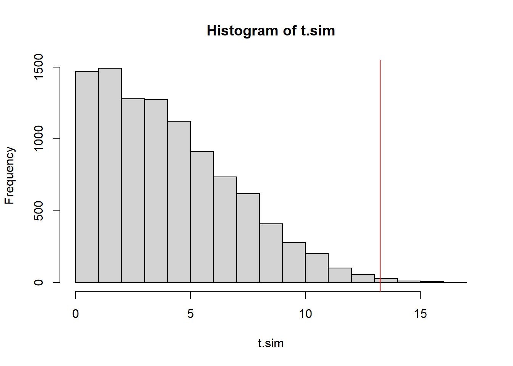
The \(p\)-value is small once again. We have strong evidence that the the variance of the model generating these values is not constant.